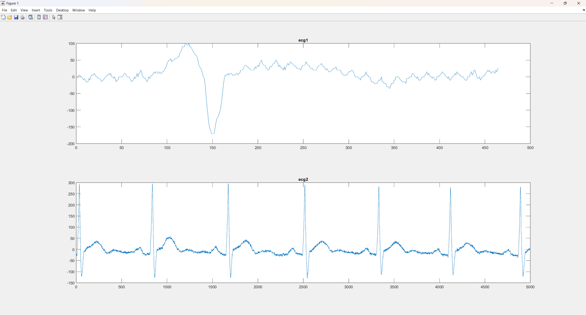
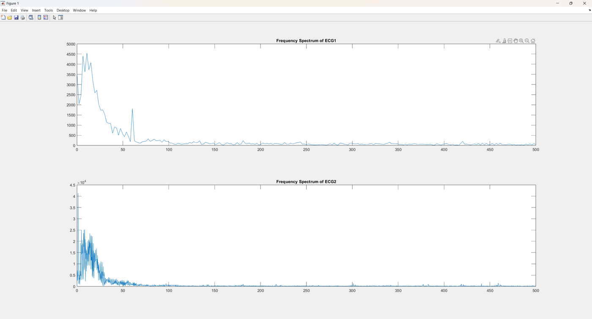
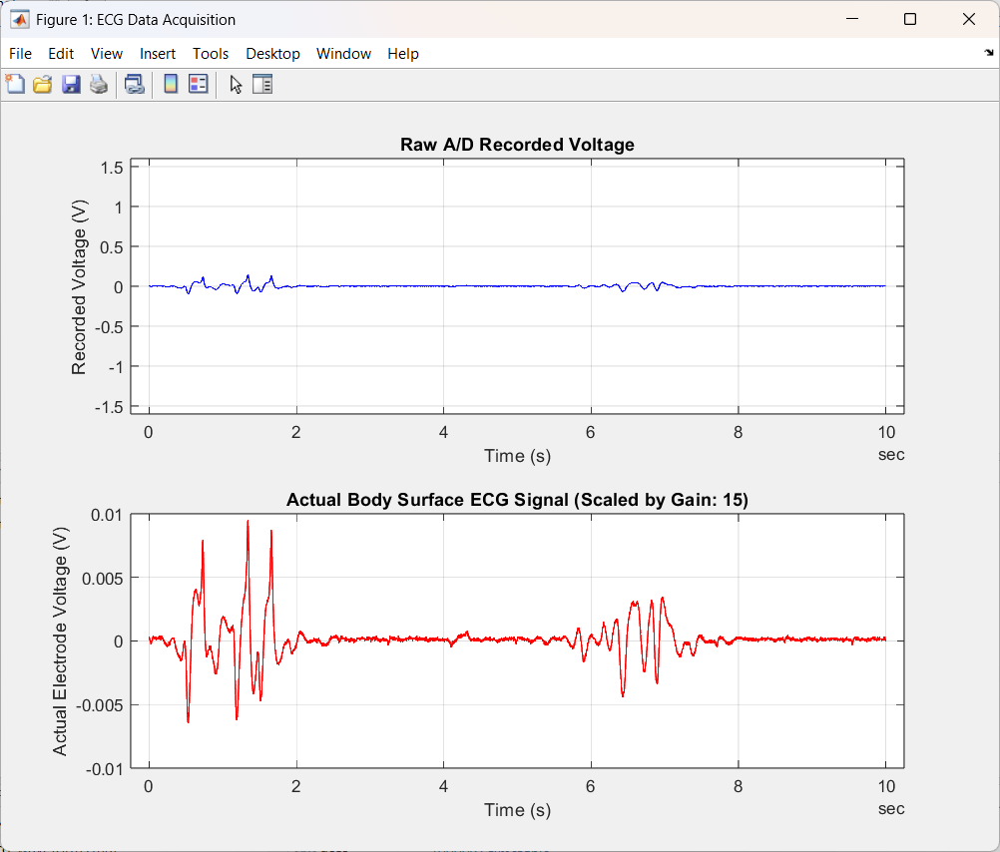

Overview项目概述
Acquired body-surface electrocardiogram (ECG) signals through an instrumentation front-end and analyzed them in both the time and frequency domains using MATLAB. The work pairs raw and gain-scaled time-domain waveforms with FFT-based frequency spectra to characterize the dominant cardiac frequency content and identify noise components such as 60 Hz line interference.通过仪表前端采集体表心电（ECG）信号，并使用 MATLAB 在时域和频域两方面进行分析。该工作将原始与增益缩放后的时域波形同基于 FFT 的频谱相结合，以刻画主要的心脏频率成分并识别诸如 60 Hz 工频干扰等噪声分量。
Gallery图库
Click any image to enlarge.点击任意图片可放大。

Time-domain ECG waveforms showing a single beat (top) and a multi-beat trace with clear QRS complexes (bottom).时域 ECG 波形：上图为单个心搏，下图为带有清晰 QRS 波群的多心搏记录。

FFT frequency spectra of two ECG recordings, with low-frequency cardiac energy and a visible 60 Hz interference peak.两段 ECG 记录的 FFT 频谱，可见低频心脏能量和明显的 60 Hz 干扰峰。

Raw A/D recorded voltage and the gain-corrected body-surface ECG signal reconstructed from the acquisition front-end.由采集前端重建的原始 A/D 记录电压与增益校正后的体表 ECG 信号。